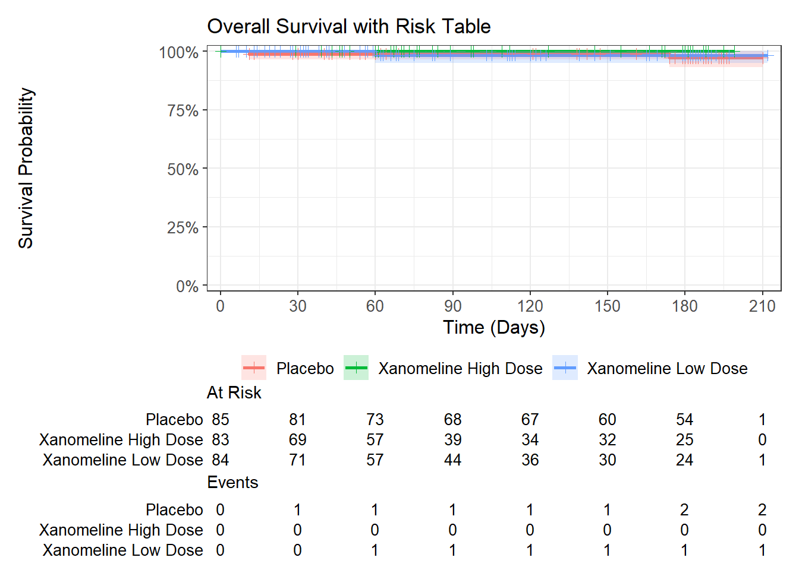
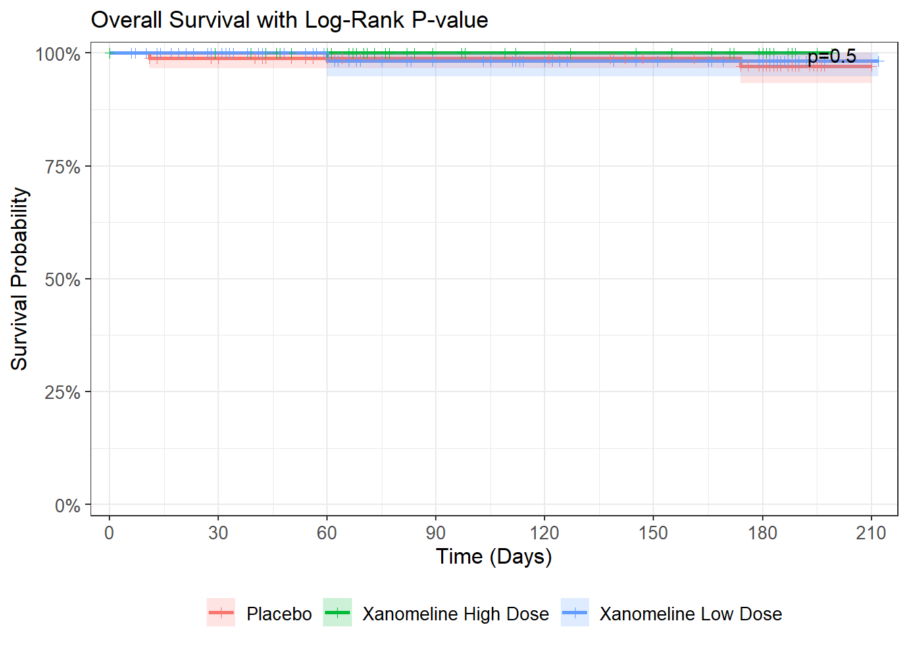
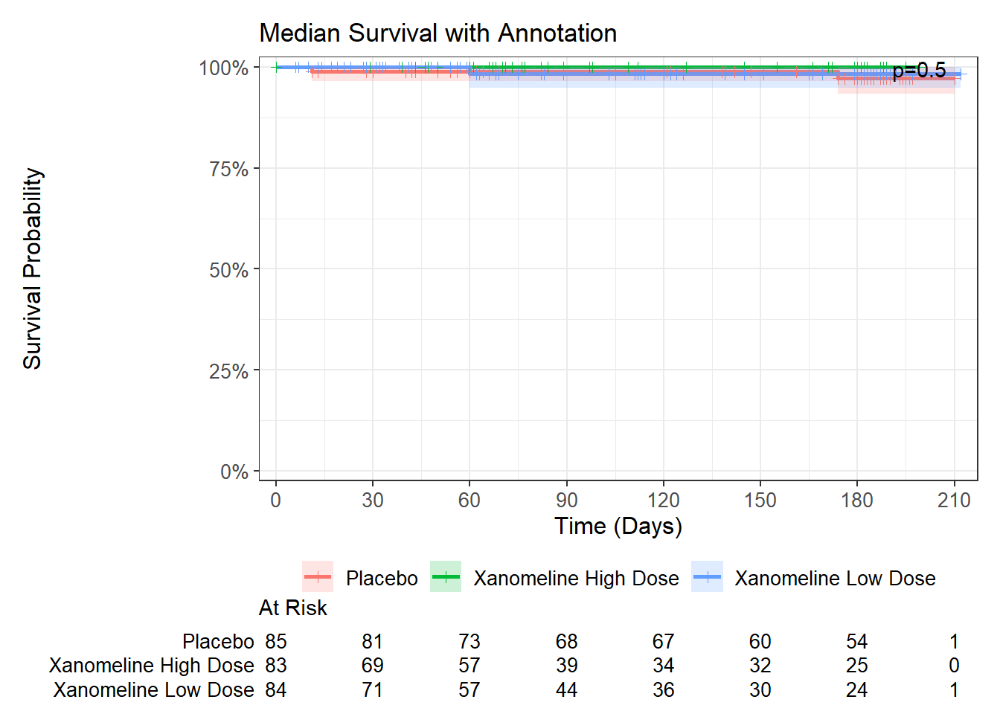
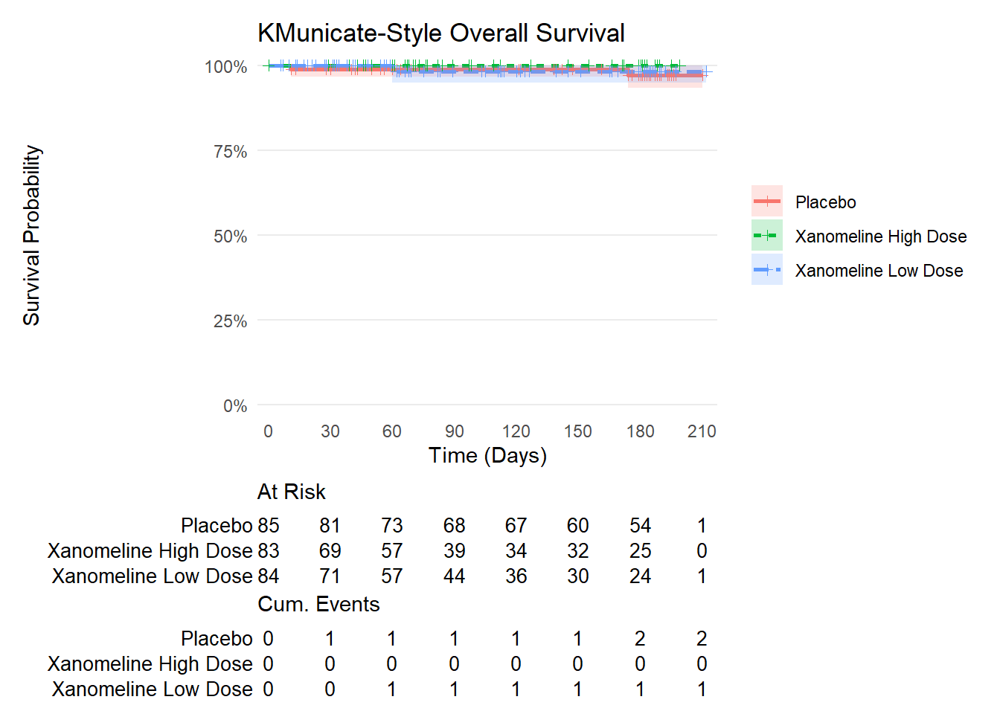

Day 29: ggsurvfit + gtsummary - Survival Plots and Clinical Figures
Publication-ready TTE figures in pharmaverse
Author
30 Days of Pharmaverse
Published
February 19, 2026
1 Overview
visR was archived from CRAN on 2024-06-22. The pharmaverse recommends two actively maintained replacements:
Task
Package
Status
KM curves + risk tables
ggsurvfit
Active on CRAN + pharmaverse
Demographics / Cox tables
gtsummary
Active on CRAN + pharmaverse
ggsurvfit is a proper ggplot2 extension – every add_*() call is a real geom or stat, so any ggplot2::theme(), labs(), or scale function works directly without wrappers.
CNSR convention: CDISC ADaM uses CNSR = 1 for censored and CNSR = 0 for event (opposite of base R). Surv_CNSR(AVAL, CNSR) from ggsurvfit handles this automatically.
Note:pharmaverseadam does not ship an adtte dataset. This day derives Overall Survival from pharmaverseadam::adsl using DTHDT, LSTALVDT, EOSDT, and TRTSDT – a standard clinical derivation.
2 Setup
library(ggsurvfit)library(gtsummary)library(survival)library(broom)library(pharmaverseadam)library(dplyr)library(knitr)adsl <- pharmaverseadam::adsl# Inspect date and death columns confirmed in pharmaverseadam::adsldate_cols <-grep("DT$|DTF$|ALV", names(adsl), value =TRUE)cat("Date/death columns:", paste(date_cols, collapse =", "), "\n")
# tbl_summary(by = ...) stratifies by a column.# add_overall() appends a combined Total column.# as_kable() renders to a kable table compatible with Quarto HTML.adtte |> dplyr::select(AGE, AGEGR1, SEX, RACE, TRTP) |> gtsummary::tbl_summary(by = TRTP,label =list(AGE ~"Age (years)", AGEGR1 ~"Age Group", SEX ~"Sex", RACE ~"Race"),statistic =list(all_continuous() ~"{mean} ({sd})",all_categorical() ~"{n} ({p}%)" ),digits =all_continuous() ~1,missing ="no" ) |> gtsummary::add_overall() |> gtsummary::bold_labels() |> gtsummary::as_kable()
Characteristic
Overall N = 252
Placebo N = 85
Xanomeline High Dose N = 83
Xanomeline Low Dose N = 84
Age (years)
75.1 (8.3)
75.3 (8.6)
74.3 (7.9)
75.7 (8.3)
Age Group
>64
219 (87%)
71 (84%)
72 (87%)
76 (90%)
18-64
33 (13%)
14 (16%)
11 (13%)
8 (9.5%)
Sex
F
142 (56%)
52 (61%)
40 (48%)
50 (60%)
M
110 (44%)
33 (39%)
43 (52%)
34 (40%)
Race
AMERICAN INDIAN OR ALASKA NATIVE
1 (0.4%)
0 (0%)
1 (1.2%)
0 (0%)
BLACK OR AFRICAN AMERICAN
23 (9.1%)
8 (9.4%)
9 (11%)
6 (7.1%)
WHITE
228 (90%)
77 (91%)
73 (88%)
78 (93%)
4 Part 2: Kaplan-Meier Plot
4.1 Step 2: survfit2() + ggsurvfit()
# survfit2() is ggsurvfit's survfit wrapper -- required for add_pvalue().# It tracks the calling environment to correctly label plot elements.# Surv_CNSR(AVAL, CNSR) converts ADaM CNSR coding to standard Surv() internally:# CNSR=1 (censored) -> status=0 | CNSR=0 (event) -> status=1# ggsurvfit uses '+' (ggplot2 extension), NOT '|>'.km_fit <-survfit2(Surv_CNSR(AVAL, CNSR) ~ TRTP, data = adtte)km_fit
Call: survfit(formula = Surv_CNSR(AVAL, CNSR) ~ TRTP, data = adtte)
n events median 0.95LCL 0.95UCL
TRTP=Placebo 85 2 NA NA NA
TRTP=Xanomeline High Dose 83 0 NA NA NA
TRTP=Xanomeline Low Dose 84 1 NA NA NA
# add_risktable() attaches a risk table below the plot using patchwork.# It MUST come last in the chain -- it wraps the ggplot and cannot be# further modified by add_* calls after it.# risktable_stats accepts: "n.risk", "cum.event", "cum.censor",# or glue-style strings like "{n.risk} ({cum.event})".# stats_label renames the risk table row labels.km_fit |>ggsurvfit(linewidth =1) +add_confidence_interval() +add_censor_mark(shape =3, size =2) +scale_ggsurvfit() +labs(x ="Time (Days)", y ="Survival Probability",title ="Overall Survival with Risk Table") +add_risktable(risktable_stats =c("n.risk", "cum.event"),stats_label =list(n.risk ="At Risk", cum.event ="Events") )

5 Part 3: Annotated KM Plot
5.1 Step 4: add_pvalue() – log-rank p-value on the figure
# add_pvalue() calls survival::survdiff() log-rank test on km_fit.# location = "annotation" places the p-value inside the plot panel.# location = "caption" places it in the figure caption below.# survfit2() (not survfit()) is REQUIRED for add_pvalue() to work.km_fit |>ggsurvfit(linewidth =1) +add_confidence_interval() +add_censor_mark(shape =3, size =1.5) +add_pvalue(location ="annotation", prepend_p =TRUE) +scale_ggsurvfit() +labs(x ="Time (Days)", y ="Survival Probability",title ="Overall Survival with Log-Rank P-value")

5.2 Step 5: add_quantile() – median survival line
# add_quantile(y_value = 0.5) draws lines at median survival (50th percentile).# y_value is the survival probability level, NOT the time value.# Must be called BEFORE add_risktable().km_fit |>ggsurvfit(linewidth =1) +add_confidence_interval() +add_censor_mark(shape =3, size =1.5) +add_quantile(y_value =0.5,color ="grey40",linewidth =0.75,linetype ="dashed" ) +add_pvalue(location ="annotation", prepend_p =TRUE) +scale_ggsurvfit() +labs(x ="Time (Days)", y ="Survival Probability",title ="Median Survival with Annotation") +add_risktable(risktable_stats ="n.risk",stats_label =list(n.risk ="At Risk") )

6 Part 4: KMunicate Theme
6.1 Step 6: theme_ggsurvfit_KMunicate()
# theme_ggsurvfit_KMunicate() applies the KMunicate style recommended for# transparent reporting of KM plots (Morris et al., BMJ Open 2019).# It repositions risk table elements for integrated, publication-ready output.km_fit |>ggsurvfit(linetype_aes =TRUE, linewidth =0.9) +add_confidence_interval() +add_censor_mark(shape =3, size =1.5) +add_risktable(risktable_stats =c("n.risk", "cum.event"),stats_label =list(n.risk ="At Risk", cum.event ="Cum. Events") ) +theme_ggsurvfit_KMunicate() +scale_ggsurvfit() +labs(x ="Time (Days)", y ="Survival Probability",title ="KMunicate-Style Overall Survival")

7 Part 5: Cox Proportional Hazards
7.1 Step 7: coxph() + broom::tidy()
# Surv_CNSR() works inside coxph() as well -- same ADaM convention handling.# broom::tidy(exponentiate = TRUE) returns hazard ratios with 95% CI.cox_fit <- survival::coxph(Surv_CNSR(AVAL, CNSR) ~ TRTP,data = adtte)broom::tidy(cox_fit, exponentiate =TRUE, conf.int =TRUE) |> dplyr::select(term, estimate, conf.low, conf.high, p.value) |> dplyr::rename("Treatment"= term,"HR"= estimate,"95% CI LB"= conf.low,"95% CI UB"= conf.high,"P-value"= p.value ) |> knitr::kable(digits =3, caption ="Cox PH - Hazard Ratios vs Reference")
# tbl_regression(exponentiate = TRUE) renders a formatted HR table with CI.# add_global_p() adds a global Wald test p-value for the treatment term.# as_kable() converts to plain kable for Quarto HTML output.cox_fit |> gtsummary::tbl_regression(exponentiate =TRUE,label =list(TRTP ~"Treatment") ) |> gtsummary::add_global_p() |> gtsummary::bold_p() |> gtsummary::bold_labels() |> gtsummary::as_kable()
Characteristic
HR
95% CI
p-value
Treatment
0.3
Placebo
-
-
Xanomeline High Dose
0.00
0.00, Inf
Xanomeline Low Dose
0.72
0.06, 8.17
8 Part 6: Accessing Survival Estimates
8.1 Step 9: tidy_survfit() – extract estimates as a data frame
# tidy_survfit() returns survival estimates as a tidy tibble.# Useful for custom ggplot2 figures or programmatic summaries.surv_df <- km_fit |>tidy_survfit()cat("Columns:", paste(names(surv_df), collapse =", "), "\n")